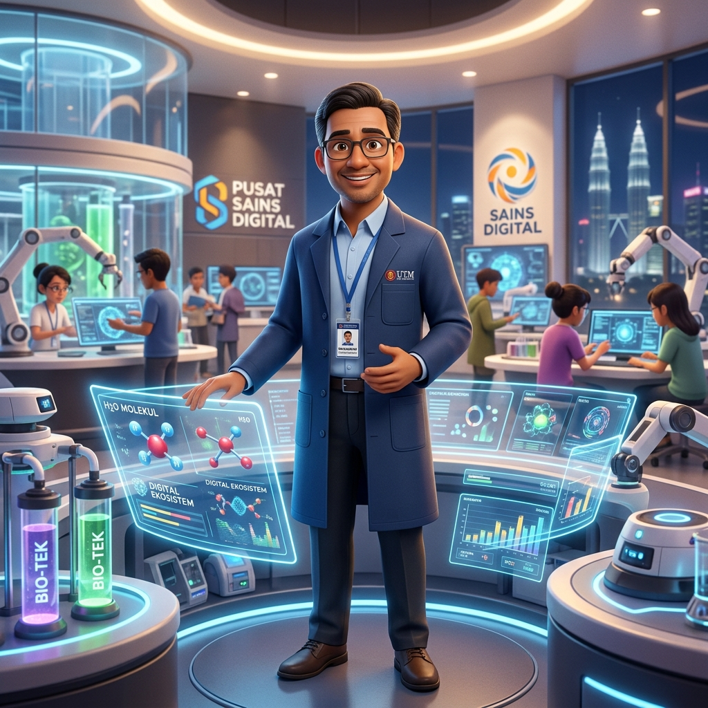

|
Hidupkan idea anda dengan kuasa video AI. Dari narasi automatik sehingga babak sinematik, transformasi bahan pendidikan anda ke tahap luar biasa.

Kreativiti Tanpa Sempadan
Lihat bagaimana AI mampu menterjemah imaginasi kepada klip video yang realistik dan berimpak tinggi.

Simulasi Realistik
"Menjana pergerakan cecair dan fizik yang kompleks untuk eksperimen sains maya."

Penceritaan Digital
"Menghasilkan babak sejarah dalam kualiti filem 4K untuk pengalaman pembelajaran imersif."
Avatar Guru AI
"Cipta hos video yang boleh bercakap dalam pelbagai bahasa hanya melalui skrip teks."
S.L.A.M
Formula ringkas untuk menghasilkan video AI yang berkualiti profesional.

Subjek
Fokus utama, watak, atau objek yang ingin anda gerakkan dalam babak.

Latar
Persekitaran tempat babak berlaku, termasuk elemen cuaca dan masa.

Aura
Gaya visual, tona warna, mood sinematik dan pencahayaan artistik.

Motion
Tahap pergerakan subjek dan teknik kamera seperti "slow motion" atau "tracking shot".
Modul Penghasilan Video Pembelajaran AI
Langkah sistematik untuk guru STEM menghasilkan video pembelajaran berkualiti tinggi dan patuh kurikulum menggunakan teknologi AI terkini.
Alur Kerja Pendidik STEM
Penyediaan Papan Cerita (Storyboard)
Bahagikan topik pembelajaran kepada babak (scenes) pendek berdurasi 5 hingga 10 saat.
- Story Prompt (Idea Babak): Sinopsis ringkas aksi atau peristiwa dalam babak.
- Visual Prompt: Deskripsi visual terperinci (gaya seni, sudut kamera, pencahayaan) dalam bahasa Inggeris untuk ketepatan optimum AI.
- Dialog / Naratif: Skrip suara latar (voiceover) yang padat dan selari dengan DSKP.
Penjanaan Imej Watak Konsisten
Cipta watak guru atau maskot STEM konsisten menggunakan penjana imej AI (seperti Imagen 3).
- Tulis deskripsi watak yang sangat spesifik (contoh: jenis pakaian, warna rambut, gaya animasi 3D).
- Simpan imej watak ini sebagai rujukan utama (Image Reference) untuk mengekalkan konsistensi visual dalam video.
Integrasi ke dalam Google Veo
Buka platform Google Veo atau alat jana video AI pilihan anda.
- Muat naik imej watak utama yang telah dijana pada Langkah 2 ke dalam ruangan Image Input / Reference.
- Masukkan teks Visual Prompt yang telah disediakan dalam papan cerita untuk memulakan proses animasi.
Penjanaan Video Mengikut Babak
Jana video secara berperingkat (babak demi babak), bukan sekaligus.
- Semak ketepatan pergerakan subjek dan kamera (contoh: pan right, zoom in) bagi setiap klip.
- Muat turun semua klip video yang berjaya, kemudian gabungkan menggunakan perisian suntingan (seperti CapCut atau Canva) bersama rakaman suara latar (naratif).
STEM: Sains Tahun 5 (Kitaran Air)

Pengenalan Cikgu STEM
"Hai murid-murid! Hari ini kita akan menerokai rahsia di sebalik kitaran air semulajadi."
"A friendly male Malaysian teacher wearing a modern lab coat, standing in a futuristic digital science lab, 3D Pixar style, bright lighting, cinematic shot."
Proses Penyejatan Air
"Proses pertama ialah penyejatan. Haba matahari menukarkan air kepada wap air yang naik ke udara."
"Extreme close up of ocean water evaporating into glowing vapor under a bright sun, cinematic, 3D animation style, dynamic camera movement rising upwards."
Kondensasi & Hujan
"Wap air menyejuk menjadi titisan air, membentuk awan, dan akhirnya turun sebagai hujan. Kitaran ini berulang sentiasa."
"Heavy rain falling from dark fluffy clouds over a green tropical forest, 3D animation style, wide angle shot, macro raindrops."
Latihan Kuasai AI: Alur Kerja & Papan Cerita Video
Alur kerja lengkap pembinaan video AI berpandukan Nota Pembelajaran STEM "Teknik Leraian".
Sediakan Nota
Nota DSKP & Fakta Teras
Bina Cerita
Papan Cerita & Skrip Babak
Jana Gambar
Visual AI Image Ref
Google Veo
Muat Naik Imej Rujukan
Masukkan Prompt
Visual & Video Motion Prompt
Jana Video
Klip Sinematik Final
Prompt Utama Penjanaan Papan Cerita Video AI
Guru boleh menyalin templat master prompt di bawah dan menampalkannya (*paste*) terus ke dalam ChatGPT / Gemini / Claude bersama nota pembelajaran DSKP masing-masing:
Bertindak sebagai Pengarah Kreatif profesional. Bina satu papan cerita (storyboard) yang komprehensif berdasarkan nota pengajaran yang diberikan di bawah. ⚙️ Tetapan Papan Cerita: Nisbah Aspek (Aspect Ratio): 16:9 (Format Sinematik Skrin Lebar / Widescreen). Bahasa Utama: Bahasa Melayu Malaysia (Standard & Baku). Latar (Scene): Dunia futuristik berteknologi tinggi. Watak Utama: Seorang guru dan dua orang murid. Gaya Visual (Tema): Animasi Jepun (Anime) dengan kualiti sinematik. Struktur: Hasilkan tepat 4 babak. Durasi: Setiap babak berdurasi 6 saat. 📌 Syarat Kandungan (Mesti ada dalam setiap babak): Prompt Visual: Tuliskan butiran terperinci merangkumi pencahayaan, sudut kamera, reka bentuk watak, dan persekitaran. Mesti menyertakan spesifikasi nisbah aspek 16:9 (cth: --ar 16:9 atau Aspect Ratio: 16:9). Prompt Video: Terangkan secara jelas pergerakan kamera (panning, zooming) dan pergerakan fizikal watak. Dialog: Tuliskan dialog yang ringkas, padat, dan berimpak. Mesti menggunakan Bahasa Melayu Malaysia yang baku dan tepat (Nyatakan "Dialog Bahasa Melayu Malaysia:" secara jelas pada setiap teks dialog). 🇲🇾 Pengegasan Bahasa Melayu Malaysia: 1. Seluruh skrip, papan cerita, penerangan visual, dan dialog MESTI ditekankan dan ditulis sepenuhnya dalam Bahasa Melayu Malaysia yang standard dan tepat mengikut konteks pendidikan DSKP. 2. Elakkan penggunaan istilah dialek seberang atau terjemahan langsung bahasa asing yang janggal. 🛑 Larangan Bersyarat: Jangan hasilkan jawapan dalam bentuk jadual. Gunakan format senarai (bullet points) yang kemas untuk mengasingkan setiap babak dan prompt. 📄 Nota Rujukan: [gantikan dengan nota cikgu]
Alatan Berkuasa
Platform utama untuk membina modul video pendidikan masa depan.
Runway Gen-2
Peneraju video AI yang menawarkan kualiti sinematik dan kawalan kamera yang mendalam.
HeyGen / Synthesia
Cipta avatar maya yang boleh bercakap seolah-olah pengajar sebenar di hadapan kelas.
Luma Dream Machine
Menghasilkan klip video yang sangat realistik dengan konsistensi fizik yang tinggi.
Google Flow
Platform pembikinan filem AI yang memberikan kawalan kreatif penuh terhadap babak dan penceritaan.
Google Veo 3
Model penjanaan video termaju yang menghasilkan visual 4K sinematik dengan pemahaman bahasa yang mendalam.
Google Vids
Platform penjanaan video berasaskan AI dalam Google Workspace untuk membina persembahan video pembelajaran STEM dengan pantas.
docs.google.com/videos